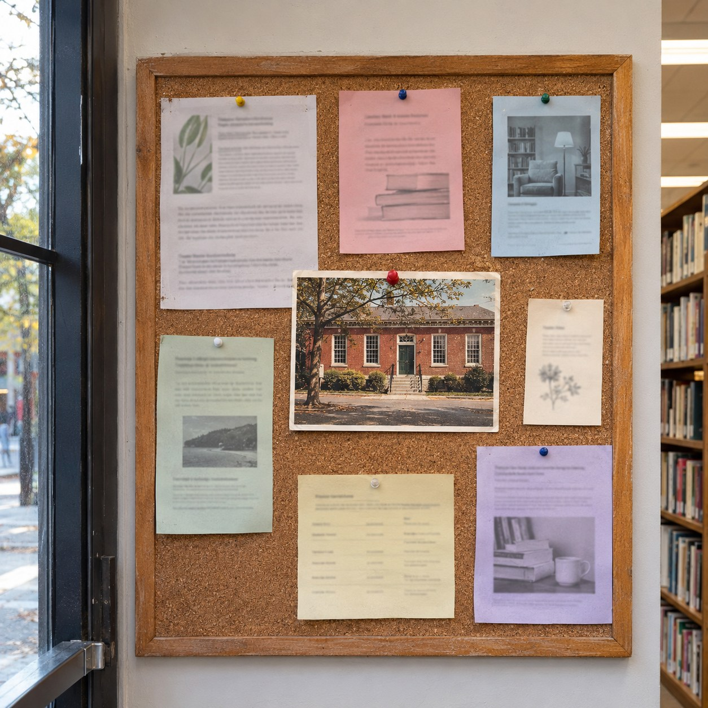
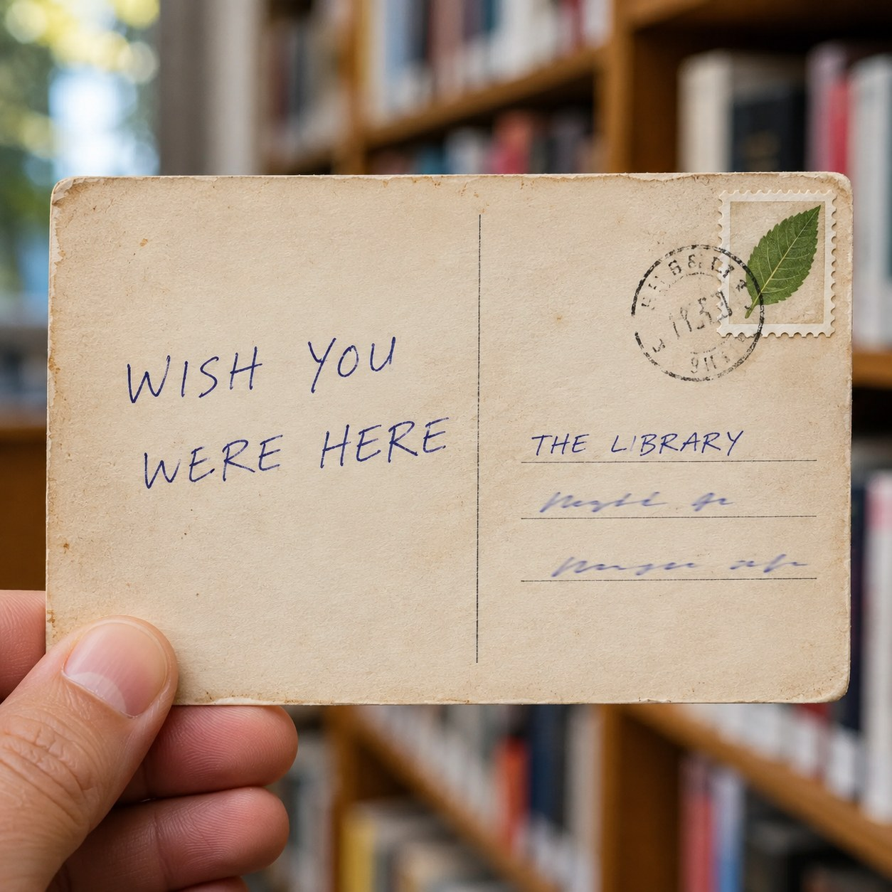

Sent Here


A picture postcard of a small town library, bought at the newsagent across the road from it. On the back, in the space for a message, I wrote the four words postcards have always carried: WISH YOU WERE HERE. Then I addressed it to the library, and posted it.
A postcard is built on a distance. The picture shows one place, the stamp pays to carry it to another, and the message spans the gap. Here is lovely. You are not here. The card is the thin bridge between.
This one has nothing to cross. It shows the library and goes to the library. Even so, it made the whole journey. It was taken from the box at the end of the street, driven to a sorting office in another town, read by a machine, and driven back, so that the postman could carry it in through the very doors it shows.
Joseph Kosuth once stood a chair beside a photograph of that chair and a dictionary entry for the word. In the gap between the three, a thing, its picture and its name, the work happens. A postcard lives in that gap. It is made of it. Sent home, it closes the gap and becomes something strange: a picture with its subject standing all around it.
And the wish? It is granted, but to no one. The library is here and has always been here. Of all the readers a postcard could find, it is the only one that could never wish to be anywhere else.
Someone at the front desk read it and pinned it to the noticeboard by the door, among the times of the knitting group and a note about a lost glove, picture side out.